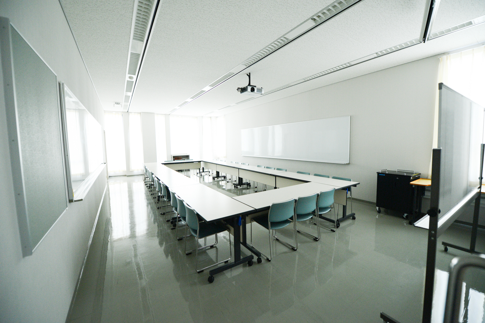

2013.05.25
第8回情報危機管理コンテスト アグレッシブ賞受賞

情報危機管理コンテストにてアグレッシブ賞を受賞しました． 情報危機管理コンテストは仮想企業のネットワークシステムのコンサルタントとなるという設定で行われる，情報セキュリティを学ぶ学生向けの大会です． 仮想企業に対するアドバイスを行う1次予選、決勝戦と同様のネットワークに接続してトラブル対応を行う2次予選、現場でトラブル対応を行う決勝戦で構成されています．
情報セキュリティの技術的な側面だけでなく，口頭・文書・メール等で顧客企業へ的確なアドバイスを行うなど，現実に起きうるトラブルへの対応能力を競い，最優秀チームには経済産業大臣賞が授与されます． 小林ゼミからはこの度，第1回から連続8回の決勝出場となり，その対応のアグレッシブさが評価され受賞に至りました．